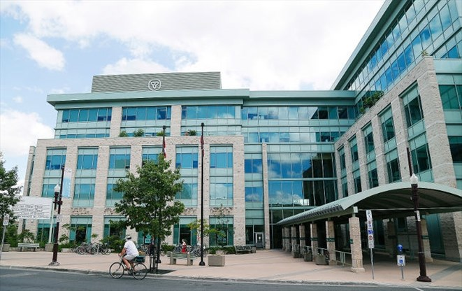
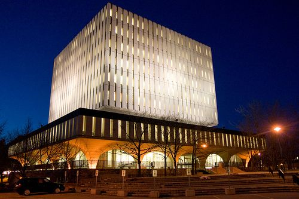
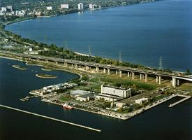

<doctype! html>

	<html>

	<head>
		<link rel="stylesheet" href="https://unpkg.com/leaflet@1.6.0/dist/leaflet.css" />
		<link rel="stylesheet" type="text/css" href="LiamStyle.css">
		<link rel="stylesheet" href="https://fonts.googleapis.com/css?family=Poppins">
		<script type="text/javascript" src="js/resumeOnClick.js"></script>
		<script src="https://unpkg.com/leaflet@1.6.0/dist/leaflet.js"></script>
		<style>
			#map {
				position: absolute;
				top: 0;
				bottom: 0;
				left: 0;
				right: 0;
			}
		</style>
	</head>

	<body>
		<div id="map"> </div>
		<script>
			var map = L.map('map').setView([43.75, -79.5], 7);

			L.tileLayer('https://api.maptiler.com/maps/streets/{z}/{x}/{y}.png?key=8VEPV7Pyx4qC1gx0fjrR', {
				attribution: '<a href="https://www.maptiler.com/copyright/" target="_blank">&copy; MapTiler</a> <a href="https://www.openstreetmap.org/copyright" target="_blank">&copy; OpenStreetMap contributors</a>'
			}).addTo(map);

			L.Control.textbox = L.Control.extend({
				onAdd: function (map) {

					var text = L.DomUtil.create('div');
					text.id = "info_text";
					text.innerHTML = "<h7>My Career So Far</h7>";
					return text;
				},

				onRemove: function (map) {
					// Nothing to do here
				}
			});
			L.control.textbox = function (opts) { return new L.Control.textbox(opts); }
			L.control.textbox({ position: 'topleft' }).addTo(map);

			var MinistryJob = L.marker([44.303234, -78.318269]).addTo(map);
			var TorontoJob = L.marker([43.652924, -79.384641]).addTo(map);
			var GeospatialJob = L.marker([43.469746, -80.542354]).addTo(map);
			var GeorefJob = L.marker([43.510010, -80.535434]).addTo(map);
			var ECCCJob = L.marker([43.299193, -79.801385]).addTo(map);
			var TDJob = L.marker([43.648189, -79.382241]).addTo(map);
			var ADUJob = L.marker([42.299930, -83.009733]).addTo(map);
			var SurveyJob = L.marker([43.408482, -80.400598]).addTo(map);
			var McGillJob = L.marker([45.504870, -73.574762]).addTo(map);

			var mnrfPhoto = '';
			var torontoPhoto = ''
			var georefPhoto = ''
			var geospatialPhoto = ''
			var ecccPhoto = ''
			var tdPhoto = ''
			var aduPhoto = ''
			var surveyPhoto = ''
			var mcgillPhoto = ''

			MinistryJob.bindPopup("<center><strong>GIS Assistant - Ministry of Natural Resources<br> Summer 2018</strong></center><p>Digitized water features across Ontario based off of aerial imagery in ArcMap for the Ontario Hydro Network. Researched and updated metadata records for the Ontario Imagery Program. Had the opportunity to work with LiDAR data to prepare DEMs and DTMs in ArcMap.</p>" + "<br>" + "<center>" + mnrfPhoto + "</center>")

			TorontoJob.bindPopup("<center><strong>Technical GIS Trainee - City of Toronto Transportation Services<br>Winter 2019</strong></center><p>Utilized the ArcGIS suite, SQL queries, and Python scripting to plan road resurfacings and reconstructions in the City of Toronto based on geographic area, pavement quality, and cost. With the analyzed data, I created maps and presented my analyses to Transportation Services.</p>" + "<br>" + "<center>" + torontoPhoto + "</center>")

			GeospatialJob.bindPopup("<center><strong>Library GIS Assistant - University of Waterloo Geospatial Centre<br>Fall 2018</strong></center><p>Provided in-person customer support to patrons of the University of Waterloo Geospatial Centre with their various GIS needs. Digitized and georeferenced historical aerial imagery in the ArcGIS suite. Prepared promotional material for the Geomatics program and GIS in Waterloo.</p>" + "<br>" + "<center>" + geospatialPhoto + "</center>")

			GeorefJob.bindPopup("<center><strong>Transportation Analyst - Georef Systems<br>Fall 2019</strong></center><p>Provided database maintenance and assisted with implementation projects for various student transportation organizations using the BusPlanner GIS. Translated software documentation from English to French. Interacted with clients through the LiveAgent Ticketing System to provide technical support.</p>" + "<br>" + "<center>" + georefPhoto + "</center>")

			ECCCJob.bindPopup("<center><strong>Geospatial Officer - Environment and Climate Change Canada<br>Summer and Fall 2020</strong></center><p>Provided geospatial support in the form of maps, analysis, and presentations for the Great Lakes Baseline Habitat Survey project.</p>" + "<br>" + "<center>" + ecccPhoto + "</center>")

			TDJob.bindPopup("<center><strong>Distribution and Geospatial Intelligence Analyst - TD Bank<br>Summer 2021</strong></center><p>Analyzed TD Bank's physical branch network, determining areas of high and low traffic. Used geospatial analyses and data science techniques to build cases for the movement of branches.</p>" + "<br>" + "<center>" + tdPhoto + "</center>")

			ADUJob.bindPopup("<center><strong>GIS Researcher - ADUSearch<br>2022/2023</strong></center><p>Analyzed housing policy for ADU development in municipalities across Canada. Performed various spatial analyses through Python and R to calculate buildable ADU area across the country.</p>" + "<br>" + "<center>" + aduPhoto + "</center>")

			SurveyJob.bindPopup("<center><strong>Land Surveying Assistant - J.D. Barnes<br>Summer 2022</strong></center><p>Performed field work as part of a land surveying crew. Staked out housing developments, performed topographic and boundary surveys with total stations and GNSS receivers.</p>" + "<br>" + "<center>" + surveyPhoto + "</center>")

			McGillJob.bindPopup("<center><strong>Graduate Teaching Assistant - McGill Univeresity<br>Fall 2023</strong></center><p>Instructed labs, fielded questions, and graded assignments for a class of approximately 40 students in GEOG308 - Remote Sensing for Earth Observation, as well as GEOG314 - Geospatial Analysis. Lab topics included a variety of remote sensing and geospatial analysis techniques in Google Earth Engine, ENVI 5.7, and ArcGIS Pro.</p>" + "<br>" + "<center>" + mcgillPhoto + "</center>")
		</script>
	</body>

	</html>